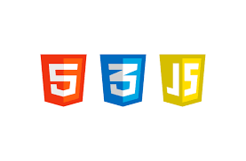
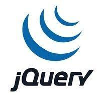
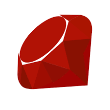
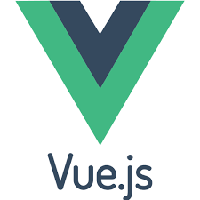
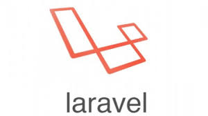
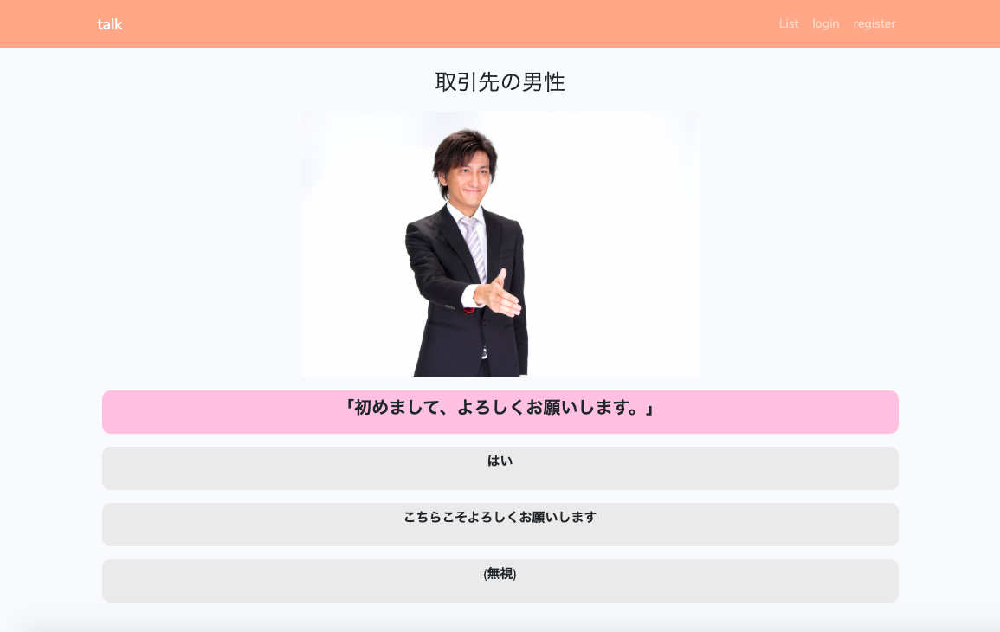

High school graduate.
Web Engineer
PROFILE
23歳男性です。休学中にプログラミングスクール（TECH::EXPERT）を受講後、とりあえず働かなくてはと考え2019年11月にSES企業に入社。現在は客先に常駐しヘルプデスク業務の合間にコードを書いたりして生きています。 手に職をという思いから始めたプログラミングですが、最近楽しめるようになりました。愛媛県出身。
SKILL






WORKS

コミュニケーション能力向上アプリ
一問一答形式の会話風クイズです。メールアドレスで登録すると新しく会話風クイズを作成することができます。
Laravel/Vue.js/HTML5/CSS3/bootstrap
Github
コミュニケーション能力向上アプリ
一問一答形式の会話風クイズです。メールアドレスで登録すると新しく会話風クイズを作成することができます。
Laravel/Vue.js/HTML5/CSS3/bootstrap
Github

その他(スクールで作成したものなど)
スクールではRuby on Railsを使用して非同期通信のチャットアプリ開発、またチームによる既存フリマアプリのクローン作成を通してアジャイル開発を学びました。入社後の社内研修ではチームでバニラPHP、MySQLを使用し基本的なCRUDの機能を持ったものを作成しました。
HTML5/CSS3/Ruby/Ruby/Ruby on Rails/PHP/JavaScript/jQuery/MySQL
Github